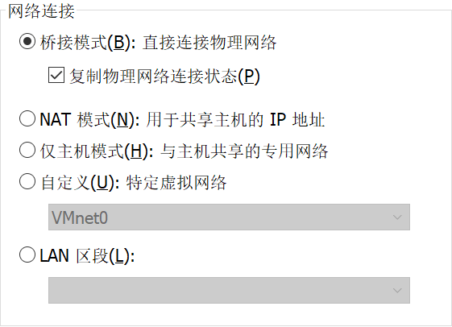
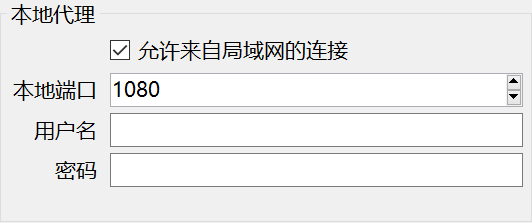
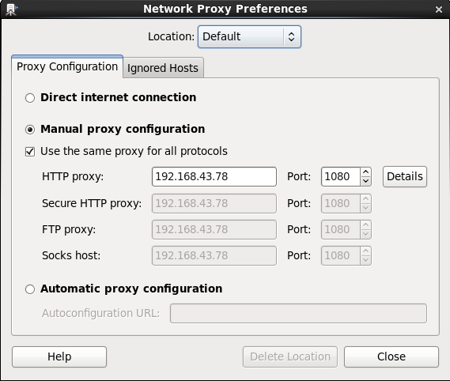
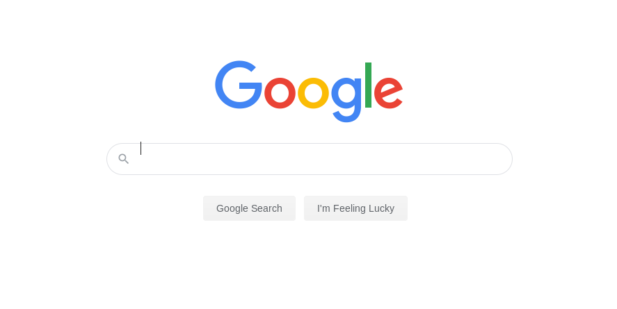

CentOs Poxy Posted on 2020-02-26 In tool CentOs Poxy使用vmware 装了个centos. 但是需要Google. 本机已经使用ssr.可以访问. 首先将vm网络设置为桥接 虚拟机- 设置 2.将本机ssr设置为帮助 - 选项设置 3.打开虚拟机器设置网络代理System - Preference - Network Proxy此处设置的ip地址为宿主机的ip 4.ok测试